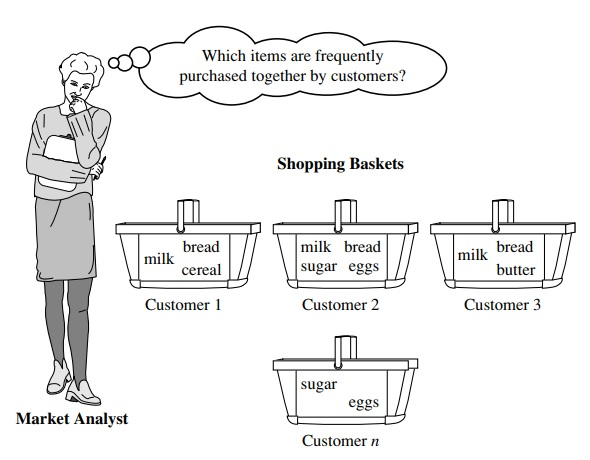

Q1. What is association rule mining give an example of market basket analysis from the real world?
Ans :
Association rule mining consists of first finding frequent itemsets (sets of items, such as A and B, satisfying a minimum support threshold, or percentage of the task-relevant tuples), from which strong association rules in the form of A=>B are generated. These rules also satisfy a minimum confidence threshold (a pre specified probability of satisfying B under the condition that A is satisfied). Associations can be further analyzed to uncover correlation rules, which convey statistical correlations between itemsets A and B.
Association Rules Mining (ARM) or Market Basket Analysis
Association rules mining is a technique that analysis a set transactions like those captured at a supermarket checkout in one of the malls, each transaction being a list of products or items purchased by one customer. The aim of association rule mining is to determine which items are purchased together frequently so that they may be grouped together on store shelves or the information may be used for cross selling. Sometimes the term lift is used to measure the power of association between items that are purchased together. Lift essentially indicates how much more likely an item is to be purchased if the customer has bought the other item that has been identified as having an association with the first item compared to the likelihood of it being purchased without the other item being purchased. Obviously, lift must be above 1.0 for the association to be of interest. Association rules mining has many applications other than market basket analysis, including applications in marketing, customer segmentation, medicine, electronic commerce, classification, clustering, web mining, bioinformatics and finance.
A typical example of frequent itemset mining is market basket analysis.
This process analyzes customer buying habits by finding associations between the different items that customers place in their “shopping baskets” (Figure ).
The discovery of these associations can help retailers develop marketing strategies by gaining insight into which items are frequently purchased together by customers. For instance, if customers are buying milk, how likely are they to also buy bread (and what kind of bread) on the same trip to the supermarket? This information can lead to increased sales by helping retailers do selective marketing and plan their shelf space.
